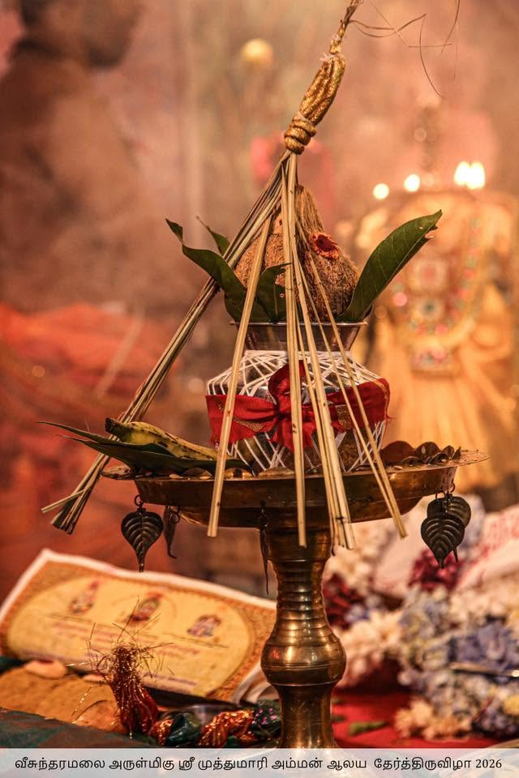

The origins of Veesundaramalai Arulmigu Sri Muthumari Amman Aalayam trace back many years, deeply rooted in the spiritual and cultural fabric of our village. According to local lore, the sacred Sri Muthumari Amman idol was discovered under divine circumstances, and the temple was established by the village elders with the blessings of great saints.
Over the centuries, the temple has been lovingly maintained and renovated by successive generations of villagers. The architecture reflects traditional Dravidian style, with intricate carvings and a serene sanctum that radiates divine energy.
Today, the temple continues to be the spiritual heartbeat of our community, preserving ancient traditions while embracing devotees from all walks of life.